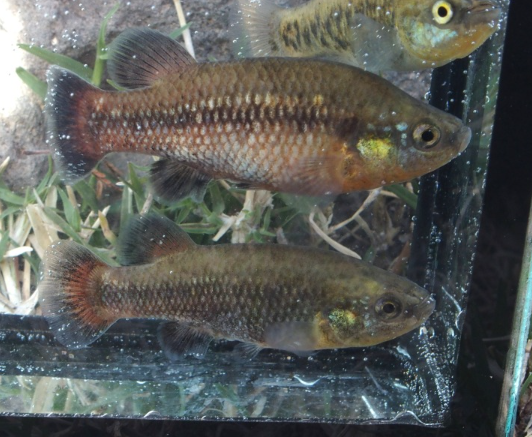

Systématique
- Ordre : Cyprinodontiformes
- Famille : Goodeidae
- Genre : Characodon
- Espèce : C. lateralis
- Auteur : Günther, 1866

Characodon lateralis est un petit goodeidé emblématique, considéré comme l'un des plus colorés de sa famille. Originaire des hauts plateaux du Mexique, il représente une lignée ancienne et morphologiquement distincte des autres membres de la sous-famille des Goodeinae.
Le mâle atteint environ 4 cm, tandis que la femelle, plus robuste, peut atteindre 5 à 6 cm. Le corps est trapu et compressé latéralement. La coloration du mâle est remarquable : une robe rouge à orangé vif sur la moitié inférieure du corps et les nageoires impaires, contrastant avec une bande latérale sombre et des taches noires sur un fond olive. La femelle est beaucoup plus discrète, arborant un patron beige-olive parsemé de points sombres.
L'espèce est classée "En danger critique d'extinction" (CR) par l'UICN. Ses populations naturelles ont drastiquement décliné en raison de la perte d'habitat et de la compétition avec des espèces invasives. Elle est l'un des fers de lance des programmes de conservation aquariophile.
Characodon lateralis est un poisson doté d'un tempérament fort pour sa taille. Les mâles sont territoriaux et passent beaucoup de temps à parader ou à chasser les rivaux hors de leur zone. En raison de cette agressivité intraspécifique, il est impératif de fournir un décor très dense pour casser les lignes de vue.
C'est une espèce qui affectionne les zones de faible profondeur, souvent parmi les racines et les plantes aquatiques denses. En aquarium, ils sont actifs et occupent principalement les strates médiane et inférieure du bac. Ils sont sensibles à la qualité de l'eau et aux polluants organiques.
Mode : Vivipare matrotrophe.
La reproduction est cyclique et dépend souvent des variations de température ou de photopériode. Comme les autres goodeidés, la femelle porte les embryons qui sont nourris via des trophotaeniae. La gestation dure entre 45 et 55 jours.
Les portées sont généralement faibles, produisant entre 5 et 20 alevins, mais ces derniers sont particulièrement grands à la naissance (environ 10-12 mm). Le cannibalisme des parents sur les alevins est fréquent chez cette espèce ; l'utilisation de mousses denses ou le retrait de la femelle avant la mise-bas est souvent nécessaire pour sauver la descendance.
Dimorphisme sexuel : Très prononcé. Les mâles sont plus petits, possèdent un andropodium et arborent des couleurs rouges/orangées vives. Les femelles sont plus grandes, plus ternes (olivâtres) et présentent un abdomen plus rebondi.
Espérance de vie : 3 à 5 ans en aquarium.
Cette espèce est endémique de l'État de Durango au Mexique. On la trouvait autrefois dans divers points d'eau du bassin du Rio Mezquital, mais elle est aujourd'hui confinée à quelques sources (ojos de agua) et canaux isolés.
L'eau de son milieu naturel est généralement claire, riche en oxygène et soumise à des variations de température importantes entre le jour et la nuit ainsi qu'entre les saisons. Le substrat est composé de sédiments, de roches et de débris végétaux. La présence de plantes comme Ceratophyllum et d'algues filamenteuses est caractéristique de son habitat.
Répartition

Origine naturelle :
- Mexique : État de Durango (Bassin du Rio Mezquital).
- Localité type : "Central America" (rectifié ultérieurement à Durango).
- Distribution actuelle extrêmement fragmentée et en recul constant.
La survie de l'espèce est menacée par l'assèchement des sources et l'introduction de poissons comme Oreochromis aureus ou Xiphophorus helleri.
Paramètres de maintenance
Température : 18 à 24 °C. Éviter les températures élevées maintenues (au-delà de 26 °C).
pH : 7,0 à 8,0.
GH : 10 à 20 °dGH.
Courant : Faible à modéré.
Volume conseillé : Minimum 60–80 L pour un petit groupe (1 mâle pour plusieurs femelles).
Régime alimentaire
Régime : Omnivore à tendance insectivore et algivore.
Consomme des larves d'insectes, de petits crustacés et du périphyton. En aquarium, une alimentation variée incluant des proies congelées (daphnies, artémias) et des aliments à base végétale (spiruline) est indispensable pour préserver l'éclat du rouge chez les mâles.